Climate Change Funding
The Role of Banks and Central Banks
25 November 2022
A promising start …
When I started preparing these slides, I found this comment somewhere on my drive:
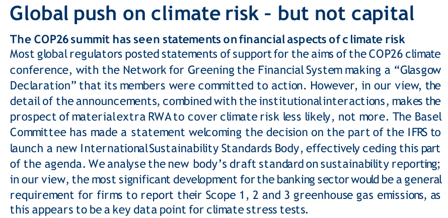
The Good, the Bad and the Ugly
of bank supervision.
The Basel way of regulating bank supervision:
- Pillar 1: Minimum Capital Requirements
- Pillar 2: Supervisory Review Process
- Pillar 3: Disclosures, Market Discipline
But note, the data used by supervisors originates from the accounts: accounting standards are important indeed.
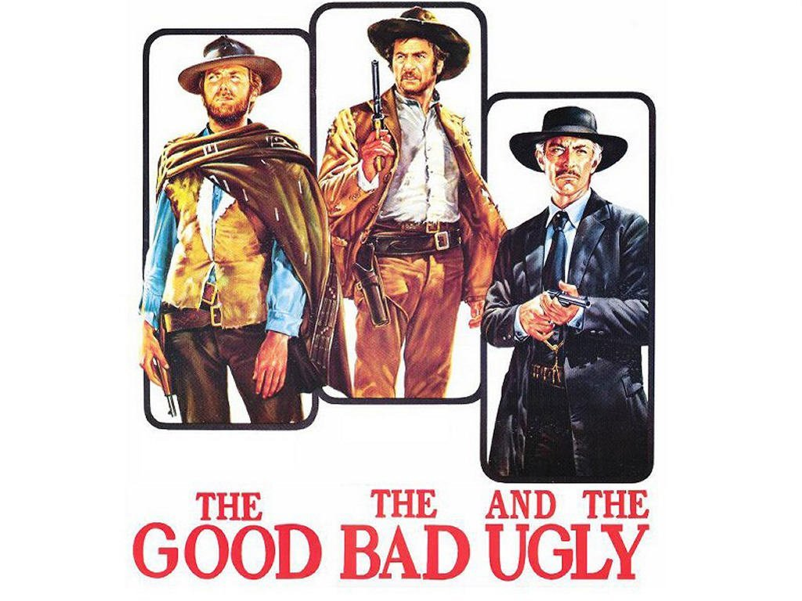
Minimum Capital Requirements
Pillar 1: the most powerful tool, often leading to tensions between Basel member states.
For example, after the GFC, minimum capital requirements changed:
- Basel II requirements, percentage of RWA:
- Tier 1 + Tier 2 \(\geq\) 8.00% i.e.
- Total Capital \(\geq\) 8.00%
- Basel III requirements, percentage of RWA:
- Common Equity Tier 1 \(\geq\) 4.50%
- Additional Tier 1 \(\geq\) 1.50% and Tier 2 \(\geq\) 2.00%
- Total Capital \(\geq\) 8.00%
- Various buffers depending on resilience (\(\leq\) 2.50%), size or systemically importance (\(\leq\) 5.00%) , credit growth (\(\leq\) 2.50%).
- Basel II requirements, percentage of RWA:
- Why the 4.50 percent?
Minimum Capital Requirements
Pillar 1: a potent tool, often leading to tensions between Basel member states.
Another example: The Basel III definition of Common Equity.
Why that long footnote #12?
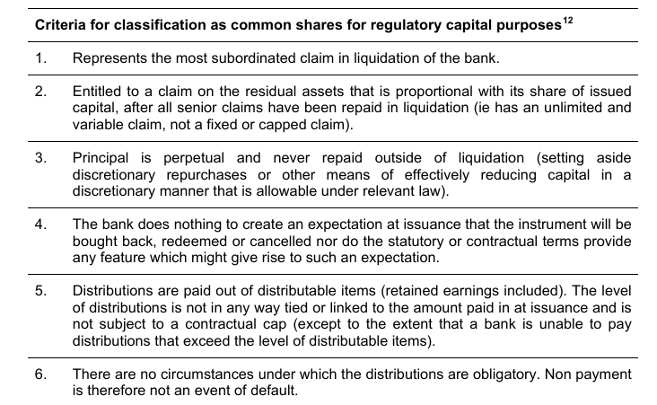
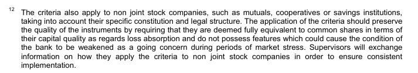
Minimum Capital Requirements
Who calls the shots? See BCBS membership distribution below:
- Europe: ten countries + ECB. EBA and EC are observers.
- The United States: four agencies.
- China on the map includes Hong Kong SAR.
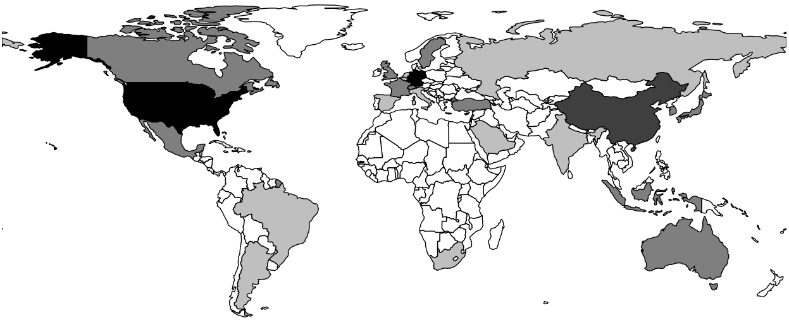
Minimum Capital Requirements
In this context and with banks building capital after COVID19, no surprise re the use of the most powerful tool.
- The Basel committee on 15 September mentioned re climate: “Discuss ongoing work related to measures to address climate-related financial risks.”
and, referring to the GHOS
- The GHOS also reviewed the Committee’s work on climate-related financial risks and cryptoassets.
- On climate, GHOS members reaffirmed the scope of the Committee’s work – and endorsed the Committee’s holistic approach to developing and assessing potential measures related to disclosure, supervision and/or regulation.
- On cryptoassets, members reiterated the importance of designing a robust and prudent regulatory framework for banks’ exposures to cryptoassets that promotes responsible innovation while preserving financial stability. The GHOS tasked the Committee with finalising such a framework around the end of this year.
Minimum Capital Requirements
Positions confirming a wait-and-see approach on use of Capital Requirements:
- The Federal Reserve:
- “We are also working to understand financial risks related to climate change. At the Federal Reserve, our mandate in this area is important, but narrow, and we are focused on our supervisory responsibilities and our role in promoting a safe and stable financial system.” (Michael S. Barr, Vice Chair for Supervision, Board of Governors of the Federal Reserve System, 15 November, 2022)
- The Bank of England
- “We find that regulatory capital is not the right tool to address the causes of climate change (greenhouse gas emissions), but should have a role in dealing with its consequences (financial risks). … the PRA already expects firms to capture and capitalise for climate-related financial risks where they are material, using current capital frameworks.” (Sam Wood, CEO of the PRA and Deputy Governor for Prudential Regulation, Bank of England, 28 October 2021)
Minimum Capital Requirements
Positions confirming a wait-and-see approach on use of Capital Requirements:
- The ECB:
- “While the ECB and other central banks and supervisors from around the world are not in the driver’s seat to implement climate policies, they should play an important role to address climate change within their mandates, rigorous analysis being a key tool.” (ECB blog 18 November 2022.)
- The RBNZ
- Our focus for 2021 and 2022 includes integrating climate change considerations more deeply within our organisation. For example, we are intensifying our supervision of climate-related risks and working to increase our understanding of climate-related risks to financial stability.
Looks like …
Well actually, there is hope
With Pillar 1 action on hold …
central banks and prudential supervisors rely on other tools, or they outsource to:
- IFRS
- Stranded assets will at some point affect the bottom line, resulting in lower capital.
- See Rabobank this year: “The share of stage 2 exposures increased to 8.4%, on June 30, 2022, due to the classification of some sectors as vulnerable … and after the Dutch government published its nitrogen policy approach.”
- ISSB
- “The Basel Committee welcomes the IFRS Foundation’s establishment of the International Sustainability Standards Board”
Re other tools: Climate Stress Testing
- Climate Stress Tests
- RBNZ “Across the participating banks, 2.5% of mortgaged properties are exposed to the flood zone with 50 centimetres of sea level rise.”
- Climate Biennial Exploratory Scenario, BOE
- See graph for expected impact
- Total assets of UK banks are about £15tn.
- “This exercise will not be used to set capital requirements related to climate risk.”
- ECB 2022 climate risk stress test
- Projecting banks reported €70bn of aggregate losses (on a sum of €25tn of assets).
- “It is not a capital adequacy exercise.”
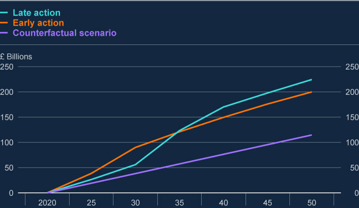
Re other tools: Pillar 2
Europe is in the lead regarding other prudential tools, such as Pillar 2: the Supervisory Review Process (SREP).
Supervisors use the SREP to make banks deal with risks not covered in Pillar 1.
The ECB will be given extensive powers to force banks to deal with ESG risks.
See Articles 98, 104, and 104a of the CRD, which allows the supervisor to
- … require institutions to reduce material ESG risks arising in the short, medium and long-term, including those arising from the process of adjustment and transition trends towards the relevant Member States, Union and third country legal and regulatory objectives in relation to environmental, social and governance factors, including through restricting or limiting their business, adjustments to their business models, governance and risk management, or requiring institutions to review their strategies.’
Pillar 2
The ECB has also communicated expectations to banks.
- These should, by end of 2024:
- Adequately categorise climate and environmental risks and to conduct a full assessment of their impact on the banks’ activities by March 2023 at the latest.
- At the latest by the end of 2023, include climate and environmental risks in their governance, strategy and risk management. A wait-and-see approach still prevails in most banks.
- By the end of 2024 meet all remaining supervisory expectations on climate and environmental risks outlined in 2020, including full integration in the Internal Capital Adequacy Assessment Process (ICAAP) and stress testing.
- However, these initiatives do not necessarily affect bank capital.
- For good reasons.
Pillar 2
Banks’ headroom to absorb additional capital add-ons.
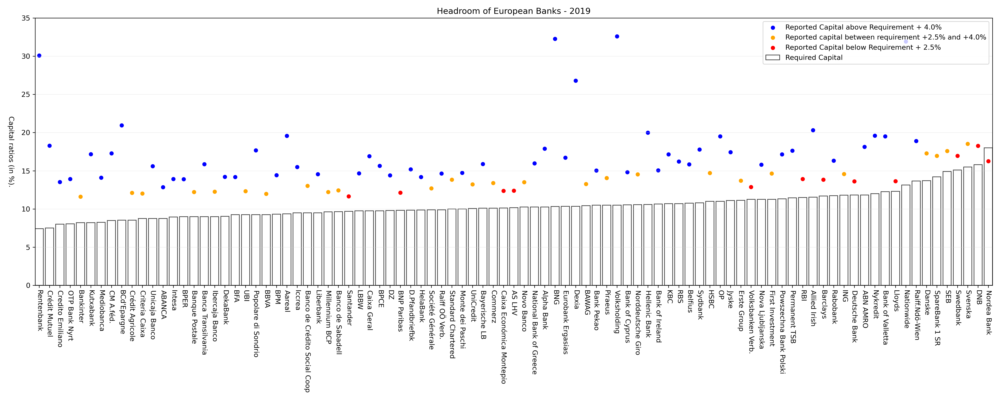
Pillar 2
Investors worried that banks are asked to do the job of lawmakers afraid to take decisions themselves.
Jérôme Legras in the FT yesterday.
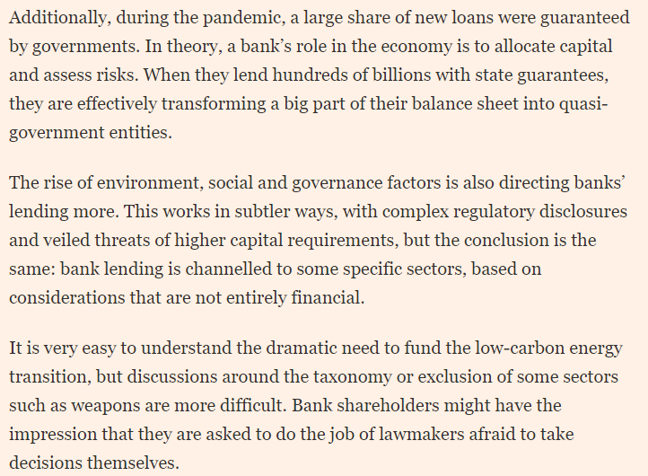
Pillar 2
And yet, despite promises to be careful with Pillar 2 add-ons and the prudential consequences of crowding out headroom, the ECB recently punished banks for poor behaviour:
- “for a small number of institutions, the outcome of the 2022 supervisory exercises on C&E risks had an impact on their SREP scores. These in turn, have an impact on their Pillar 2 capital requirements.” (ECB, Walking the Talk, November 2022)
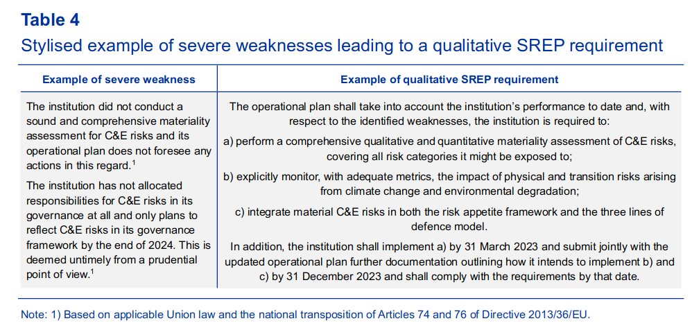
In other words, the ECB is …
Pillar 2
Not sure if the ECB has a reason to moan: “A wait-and-see approach still prevails in most banks.”
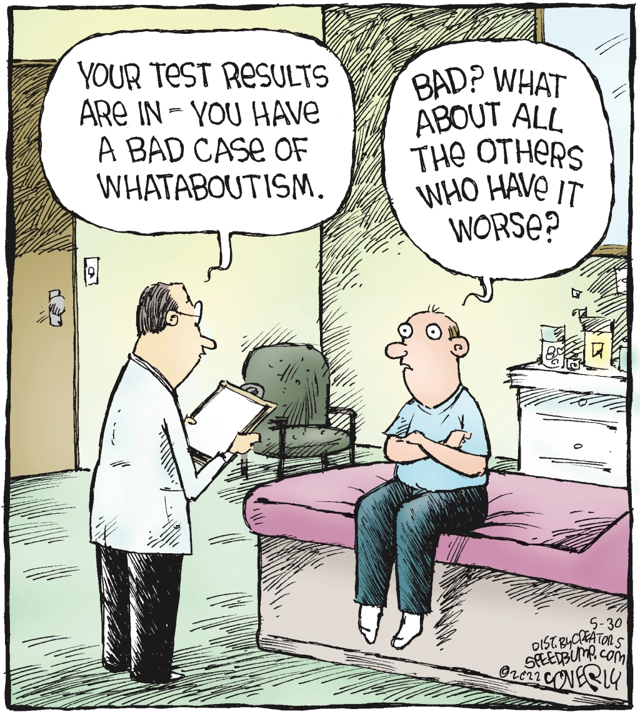
Pillar 2
- Another complaint from the recent ECB climate stress test: “Physical risk is generally considered very narrowly, with a focus on the impact of floods and droughts on credit risk.”
- But note the picture from an earlier ECB climate stress test document:
- And the picture below from 2022 climate stress test presentation slides:
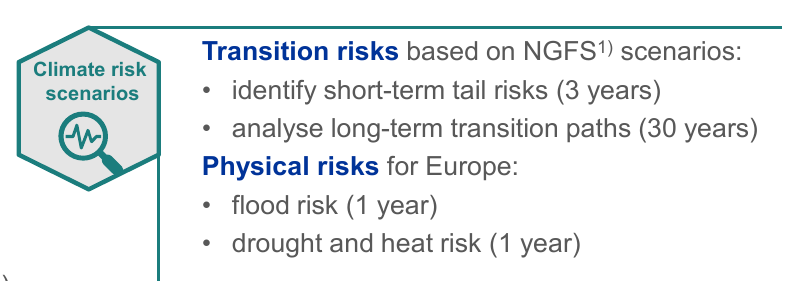
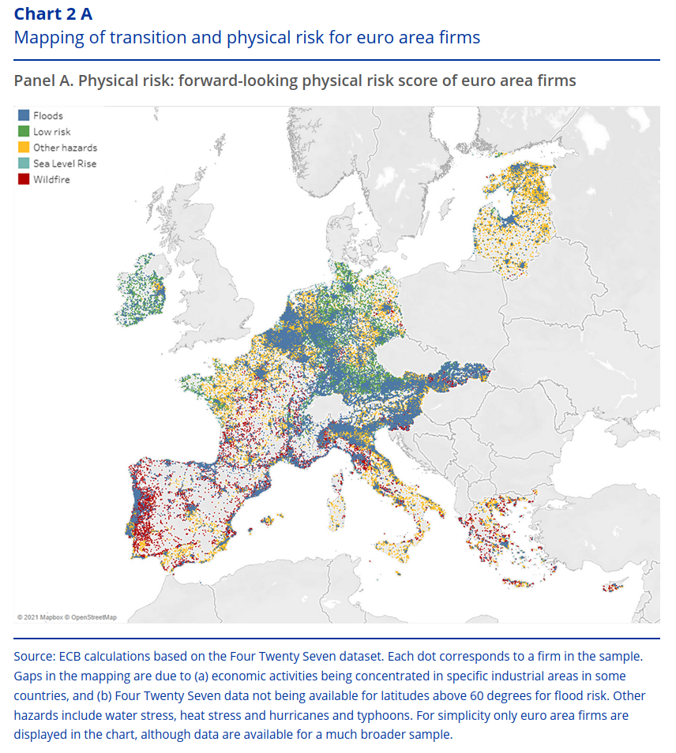
Pillar 2
Bank of England on the use of Pillar 2:
- Currently, firms should capture material climate-related financial risks if they are exposed to these risks and they are not (fully) captured in Pillar 1.
- Moreover, the PRA buffer is designed to reflect risks that firms become exposed to in the future over a three to five year time horizon under a severe but plausible stress.
Lastly: Pillar 3 disclosures
The EU in particular relies on disclosures
- See the EBA’s P3 ESG ITS, via Article 449a of the CRR.
- Part of wider EU disclosure initiatives.
- Neatly summarized in this graph.
- Time-lines:
- First disclosure reference date will be 31 December 2022.
- Phase-in period until June 2024 for Scope 3 emissions and alignment metrics.
- The disclosure of information on the GAR will start to apply in 2024 for data as of end 2023.
{kind=link}
{kind=link}
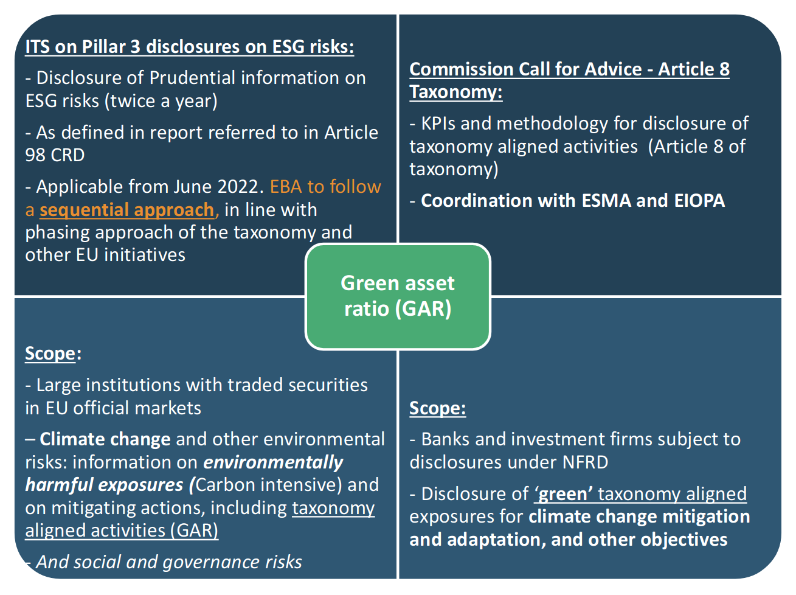
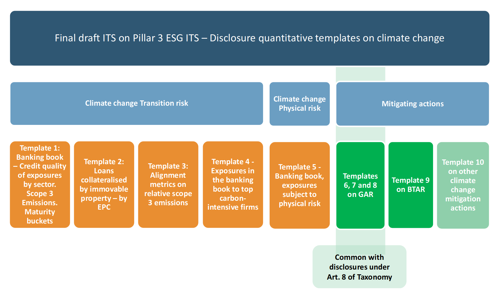
Wrapping up
- Pillar 1: Minimum Capital Requirements - most powerful tool
- But untouchable for now. ECB’s Andrea Enria: “I don’t think we are still talking about the Pillar 1 requirements at the moment”
- Pillar 2: Supervisory Review Process
- Bank supervisors appear to hold back, unless Pillar 2 used for covering material climate-related financial risks (BOE), while ECB appears to use Pillar 2 to discipline.
- Pillar 3: Disclosures - most popular, but “You cannot talk yourself out of st you acted yourself into.”
On C&E risks, it appears as though there is a shift in the balance: favouring of disclosures.
However, the G20 last week: “We welcome the report by the FSB and the Network for Greening the Financial System (NGFS) on climate-scenario analysis by jurisdictions.”
So, no outright global support for changing the balance between supervisors and accounting standard-setters in the design of climate risk disclosures.
ECB Expectations
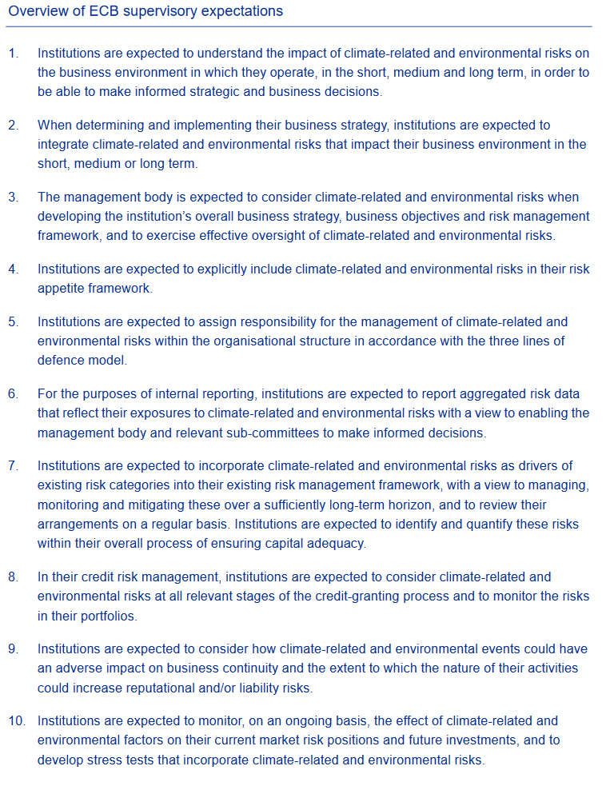
ECB Expectations
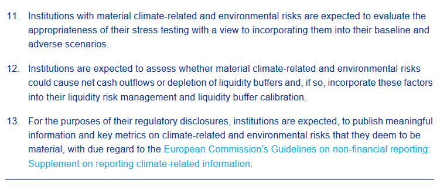